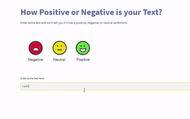
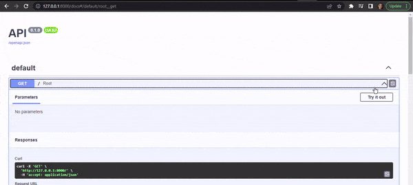
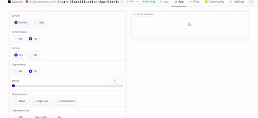

For this research, I fine-tuned pre-trained Deep Learning models from HuggingFace on a brand-new dataset to adjust the algorithms to anticipate the emotions expressed in a Tweet.
In order to inform you the emotion behind your input comments, I deployed a machine learning model using streamlit. The system will be able to monitor ,track and check your entered remarks, and it will be able to determine if they are favorable, negative, or neutral.

In order to develop a model that can accurately predict future sales using data from 54 different stores and 33 different products collected from the same country, the project analyzes and forecasts the number of products sold per store per week for a neighborhood grocery store. The developed models can be used to make observations and use them to inform future strategic decision-making. We would like to help the grocery store's management (business managers) gain some understanding from their data in order to enhance operations and ultimately income.
As a result of overstocking, Corporation Favorita, an Ecuadorian supermarket retailer, was able to stop losing money. In order to forecast weekly sales for any of their products, I deployed an ML model.

The major goal of this project is to develop a classification model that can accurately differentiate between sepsis and non-sepsis cases. To do this, we will use a dataset that contains essential information, such as blood test results, blood pressure, BMI, and patient age. The developed model will be made available as a FastAPI-based API using a Docker container
As a result, In order to save lives and to prevent deaths, I created an app that can determine whether a patient has sepsis. To communicate with the backend model, it employs an API.

The purpose of this project is to determine the important churn indicators, prospective retention methods, and the likelihood that a customer will leave the business. One of the main issues facing the telecom sector is churn.
A telecom business has been losing clients as a result. I developed a model to forecast client attrition using their data. This software is an effective tool for keeping consumers.